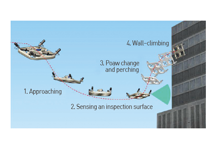
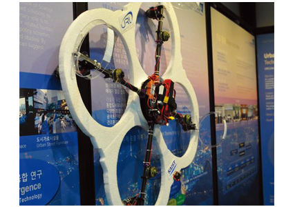

Top 10
Top 10
KAIST RESEARCH ACHIEVEMENTS
Development of a
wall-climbing drone
Department of Civil and Environmental Engineering
Hyun Myung
Summary
CAROS (Climbing Aerial RObot System) is a drone-type wall-climbing robot that can be used to inspect the surfaces of buildings and superstructures by changing its configuration and attaching itself to all types of surfaces. It is an efficient means of cleaning and conducting maintenance on buildings. CAROS has been extended to FAROS (Fireproof Aerial RObot System) that has been designed to enter large buildings and quickly gather information in the event of a fire. Such data will assist firefighters in their rescue efforts.
R&D Report
A drone-type wall-climbing robot system can access any surface of a structure by flying and attaching to the target area using a configuration-change and perching mechanism. The robot is also equipped with a mechanism that allows it to climb vertical surfaces, like other wall-climbing robots. It is expected to be used for up-close inspections and maintenance of structures of various shapes.
The structural stability of large structures, such as bridges, high-rise buildings, wind turbines, and large aircraft, is a major factor of social security. Nowadays, due to the aging of large structures and public concern regarding the potential of their collapse, interest in structural health monitoring has been increasing around the world. Though much research has been done on means of inspecting inaccessible parts of large structures using mobile robots, the fact that most existing robots require the installation of additional infrastructure or use magnetic-based technology or vacuum adhesion has made it difficult to use them on structures with diverse surface shapes and materials.
We have proposed the first drone-type wall-climbing robot system that doesn't require the installation of additional infrastructure, thereby maximizing stability and mobility. Called CAROS (Climbing Aerial RObot System), this robot features greater mobility than existing wall-climbing robots. In particular, it has the advantage of being able to recover from falls caused by unexpected disturbances. Since the robot can attach to surfaces, it is capable of performing up-close inspections of and maintenance on structures of various types.
- Wall-climbing drone design and analysis: The structure and mechanism of the drone were designed and analyzed to maximize flight stability and grip force.
- Development of flying/climbing mode transformation and wall-climbing control algorithm: In order to allow the robot to attach to a wall while flying, a flying/climbing mode transformation and wall-climbing control algorithm was developed. Forward and backward kinematics were derived and applied to the algorithm.
- Development of three-dimensional autonomous navigation technology: The autonomous navigation algorithm was developed using sensor information that allows the robot to sense a three-dimensional environment.
 Fig 1. Concept of wall-climbing drone
 Fig 2. Prototype of wall-climbing drone
Fig 2. Prototype of wall-climbing drone
 Fig 3. Scene of flying → Attaching → Wall-climbing
Fig 3. Scene of flying → Attaching → Wall-climbing
 Fig 4. The CAROS, a drone-type wall-climbing robot system
These technologies are expected to be used for the inspection or maintenance of surfaces that are not easily accessible. They may also be used to perform various types of maintenance on urban structures, such as inspections of wind turbine blades and the cleaning of high-rise buildings and solar panels
Research Funding
ㆍThis research was funded by the KAIST Initiative for Disaster Studies and the KAIST Institute.
Research Outcomes
ㆍPatent : Received Best Presentation Award in ICCAS (Oct. 2015) "Mechanism and system design of MAV(Micro Aerial Vehicle)-type wall-climbing robot for inspection of wind blades and non-flat surfaces," in Proc. of Int'l Conf. on Control, Automation and Systems (ICCAS), pp.1757-1761, Busan, Korea, Oct. 13-16, 2015.
ㆍPatent : Broadcasted on international news. Especially, broadcasted around the world on BBC World News, BBC Click (May. 30 - Jun. 2, 2015), and Daily Planet of Discovery Channel (March 2016).
ㆍPatent : Received LG Yonam foundation scholarship/research support (Jul. 2015): Structural health monitoring technology using a wall-climbing droneNature, 518, 385-389 (2015).